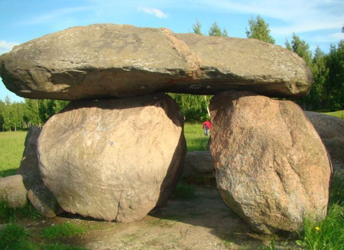
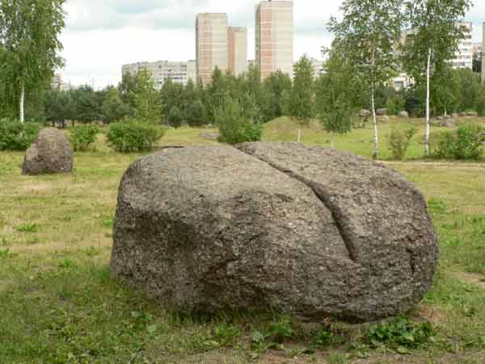
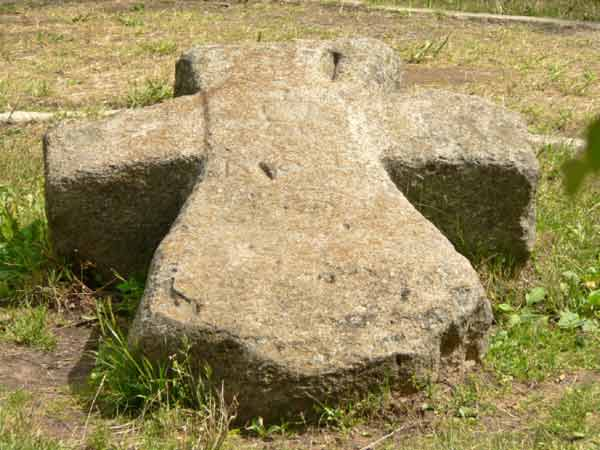
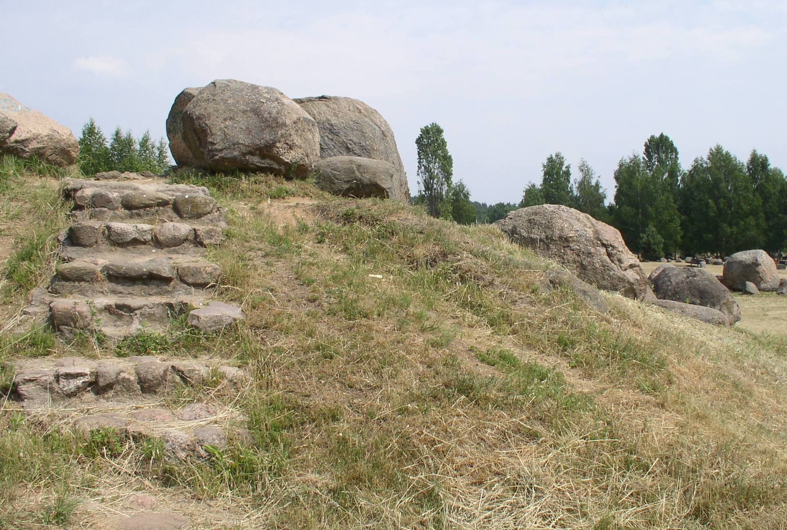
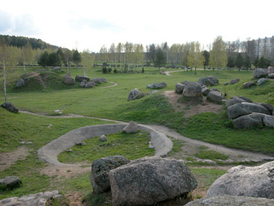
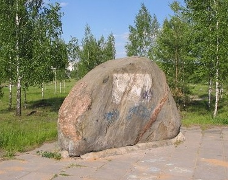

Минск

Музей Валунов
Это самый загадочный музей не только в Минске. Ни одна столица Европы не имеет такого музея. Лишь на территории Литвы создан аналогичный музей, правда, он в 2-3 раза меньше нашего и довольно примитивен по своей структуре.

Музей валунов был создан в 80-е годы двадцатого века. Находится он на восточной окраине Минска между Академгородком и микрорайоном Уручье-2 в пойме реки, которая протекала в тех местах много-много лет назад. Работает круглосуточно. Это одновременно и парковая зона города - место отдыха минчан. Территория музея была излюбленным местом отдыха не только жителей микрорайона Уручье, но и всех горожан. Он знавал на своем веку многочисленные экскурсии школьников, студентов, бывали здесь и иностранные делегации. Валуны - часть природы, важный объект истории и культуры белорусов, предмет научных исследований.
Уникален белорусский музей валунов и тем, что представленная коллекция камней - живая энциклопедия для студентов. Здесь наглядно можно получить знания о горных породах. Интересен замысел музея - на огромной территории валунами и камнями поменьше выложена карта Беларуси. Группами валунов обозначены города и крупные населенные пункты республики, а тропинки обозначают основные транспортные артерии.

Самые высокие холмы на карте (до 3,5 м), расположенные в центральной ее части, имитируют возвышенность с максимальными абсолютными отметками 346 м (гора Дзержинская) и 342,7 м (гора Лысая). Холмы поменьше – это другие возвышенности Беларуси.

Наиболее интересные экспонаты – 500 крупных валунов – размещены на карте именно в тех местах, откуда они и были вывезены. Речная система изображена в виде дорожек. В местах расположения областных центров посажено по три ели. Границы карты очерчены низкорослым кустарником.

Если подъехать к парку со стороны Уручья и спуститься вниз по лестнице, попадём прямо на Аллею валунов. Это цепь из наиболее крупных ледниковых глыб, выложенных вдоль дорожки, которая соединяет микрорайон Уручье-1 с Академгородком. Экспозиция «Питающие провинции» занимает северо-западный угловой участок парка. На юго-восточном - «Петрографическая коллекция» в форме круга, обрамленного пешеходной дорожкой и разделенного на четыре сектора. Внутри круга – коллекция ледниковых валунов из различных по составу и происхождению горных пород. Название экспозиции «Форма валунов» на восточной площадке парка говорит само за себя.

Еще одна экспозиция – «Камень и человек» расположена в южной части парка. Таким образом, структура музея - миниатюрная имитация Беларуси, с сохранением деталей рельефа, всей нашей страны и территории, прилегающей к ней: настоящим возвышенностям соответствовали искусственные холмы, дорожки олицетворяли главную речную систему, два небольших бассейна играли роль озера Нарочь и Минского моря. Валуны на этой "каменной" карте располагались точно по географическому принципу: именно в тех местах, где они были собраны на самом деле.

Оценив важность валунов для изучения родной земли, осознав необходимость сохранения наиболее ценных экземпляров, в Минске под патронажем АН БССР в 1976 году формируется научно-техническая геологическая экспедиция. В течение пяти лет 2134 валуна было привезено на территорию музея. Здесь собраны валуны со всей Беларуси. Когда-то много миллионов лет назад занес их к нам великий ледник. Собрать тысячи огромных камней со всей Беларуси и привезти их сюда было весьма не простым делом.
Оставить комментарий
Улицы |
Инфраструктура
Отдых
|
Транспорт |

|